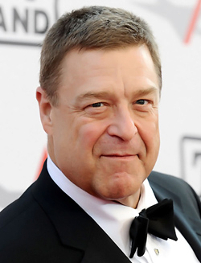

John Stephen Goodman is an American actor and producer, winner of the Golden Globe (1993) and Emmy (2007). He is known for his roles in the Cohen brothers' films of the 1990s and in the Oscar-winning "Artist" (2011).
John Goodman was born on June 20, 1952 in Lower Effton, near St. Louis, Missouri, to a postal worker. His father died of a heart attack when Johnny was two years old. his mother, Virginia Goodman, had to raise three children (Betty's younger sister and Leslie's older brother) alone.